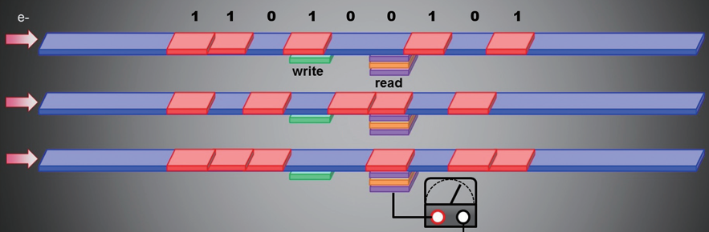

연구성과 10선
연구성과 10선
KAIST RESEARCH ACHIEVEMENTS
초고속 동작 자기메모리 핵심 기술
물리학과 김갑진
요약
자구벽 이동 기반 자기메모리 (domain wall motion-based magnetic memory)는 자성 나노선에서 움직이는 자구벽의 이동에 기반한 신개념 비휘발성 메모리 소자로서, 기존 메모리들의 장점을 합한 유니버설 메모리가 될 것으로 기대를 모으고 있는 차세대 메모리이다. 그러나 실용화를 위해서는 자구벽의 속도를 높여야 하는 문제가 있었다. 본 연구에서는 자구벽(magnetic domain wall) 이동 속도를 증가시키는 새로운 메커니즘을 제안하고, 이를 실험적으로 증명하였다. 연구진은 페리자성체 GdFeCo의 각운동량 보상점 (각 운동량이 0이 되는 지점)에서 자구벽의 속도가 급격히 증가할 것을 이론적으로 예측하였고, 이를 실험을 통해 확인한 결과, 상온에서 자구벽의 속도가 2km/s이상을 가짐을 확인하였다. 이는 차세대 메모리의 구현을 앞당기는 의미를 가질 뿐만 아니라, 각운동량이 사라지는 지점에서 나타나는 새로운 물리현상을 발견했다는 의미에서 학문적으로도 큰 가치가 있는 결과라 할 수 있다.
연구배경
현재 사용 되는 메모리 소자는 DRAM, SRAM, Flash memory, HDD 등이 있다. DRAM과 SRAM은 속도가 빠름에 반해, 전원이 꺼지면 메모리가 사라지는 휘발성 특성을 보인다는 문제가 있다. Flash memory는 비휘발성이긴 하나, 동작속도가 느리고, 쓰고 지우는 횟수의 한계가 존재하는 단점이 있다. HDD (Hard Disk Drive)의 경우 높은 용량이 장점이나, 기계적인 회전을 사용함으로써, 전력 사용량이 높고 충격에 약하다는 단점이 있다. 자구벽 이동 기반 자기메모리 (Domain wall motion-based magnetic memory, 일명 racetrack memory)는 이러한 기존 메모리의 단점을 해결 하고자 등장한 메모리이다.
자구벽 메모리의 핵심 동작원리는, 하드디스크의 기계적인 회전을 전류에 의한 자구벽 이동으로 대체하는 것이다 (다음 페이지 그림 참조). 자성 나노선을 사용함으로써 비휘발성 특성을 확보하고, 기계적인 회전을 없앰으로써 전력 사용량을 줄이고 충격에 강한 메모리를 만들겠다는 아이디어를 기반으로 한다. 따라서, 고속 동작만 가능하다면, 기존의 메모리의 장점을 모두 가지는 새로운 메모리가 될 것으로 기대를 받고 있다. 현재까지 연구 결과, 자구벽 메모리의 속도는 수백 m/s정도의 한계를 가진다는 것이 보고되었다. 이는 자구벽이 이동할 때, 회전하면서 이동하게 되는 워커붕괴현상(Walker breakdown)이 근원적인 원인이 된다. 이러한 워커붕괴현상은 자성물질이 본질적으로 가지게 되는 각운동량에 기인하기 때문에 피할 수 없는 현상으로 알려져 왔다. 자구벽 메모리 소자의 초고속 동작에 있어서, 워커붕괴 현상은 치명적인 약점으로 작용하기 때문에 이를 극복하기 위한 해결방안이 필요하였다.
 그림 1. 자구벽 메모리의 개념도
연구내용
기존의 자구벽 메모리 연구는 대부분 강자성체에서 이루어 졌다. 강자성체는 물질 내부의 자화가 한 방향으로 향하는 물질로서, 항상 각운동량이 존재하기 때문에 워커붕괴 현상을 피할 수가 없다. 본 연구진은 강자성체가 아닌 반강자성체를 주목하였다. 반강자성체는 인접한 스핀이 반평행을 이루고 있어서 전체적인 자화의 총합이나 각운동량의 총합이 0이 되는 물질이다. 본 연구진은 이론적인 선행 연구를 통하여, 반강자성체에서는 각운동량이 0이므로 워커붕괴현상이 사라지고 자구벽의 속도가 급격히 빨라질 것이라는 것을 예측하였다. 그러나 이를 실험적으로 규명하는 것은 쉽지 않았는데, 그 이유는 반강자성체는 자화가 0이므로, 외부자기장 으로 제어하는 것이 불가능하기 때문이다. 이에 본 연구진은 GdFeCo합금에 주목하였다. 이 물질은 페리자성체로서, Gd의 자화와 FeCo의 자화가 반평행으로 나열되어 반강자성체적 특성을 띄지만, 각각의 원소의 자화크기가 달라서, 전체적으로 총 자화가 0이 되지 않는 물질이다. GdFeCo의 경우, 물질의 조성이나 온도를 바꿈으로써, 자화의 총합이나 각운동량의 총합을 바꿀 수 있는데, 특이하게도 자화의 총합이 0이 되는 온도와 각 운동량의 총합이 0이 되는 온도가 다르게 나타난다. 즉, 각운동량의 총합이 0이 되는 곳에서 자화가 남아 있으므로, 외부 자기장으로 제어가 가능하다는 것을 의미한다. 본 연구진은 GdFeCo의 각운동량이 0이 되는 지점에서의 자구벽 속도를 조사하였고, 그 결과 속도가 급격히 빨라지는 것을 관측하였다. 이는 각운동량이 0이 되는 지점에서 워커붕괴현상이 사라지면서, 자구벽이 반강자성체적 동작을 한다는 것을 의미하는 것이다. 본 연구진은 여기에서 한 걸음 더 나아가 GdFeCo의 조성 조절을 통하여, 상온에서 2km/s 이상의 자구벽 속도를 얻는 것에 성공하였다. 이는 기존 강자성체 기반 소자에서의 자구벽 속도를 크게 뛰어넘는 것으로 자구벽 메모리의 실현을 앞당기는 결과라 할 수 있다.
기대효과
- 본 연구는 물질의 각운동량이 0이 되었을 때 나타나는 새로운 현상을 발견한 결과로서, 학문적으로 큰 의의가 있다. 이러한 결과는 “페리자성체 스핀트로닉스”라는 새로운 학문 분야를 촉발시키는 계기가 될 것으로 기대된다. 상온에서 자구벽의 속도를 크게 증가시킨 결과는 자구벽 이동 기반 메모리 소자의 실용화에 크게 기여할 것으로 생각 된다. 자구벽 이동 기반 메모리 소자가 실현된다면, 국내외 메모리시장에 큰 파급력을 일으킬 것으로 기대된다.
연구성과
[논문] Kab-Jin Kim et al, “Fast domain wall motion in the vicinity of the angular momentum compensation temperature of ferrimagnets”, Nature Materials 16, 1187 (2017)
[특허] 시프트 레지스터 및 그 데이터 시프트 방법, Shift register and data shift method thereof, 출원번호: 10-2017-0110968
[홍보] 논문과 관련하여 각각 언론보도 10여회 (10.17일자 “초고속 저전력 메모리 속도 향상 기술 개발”)